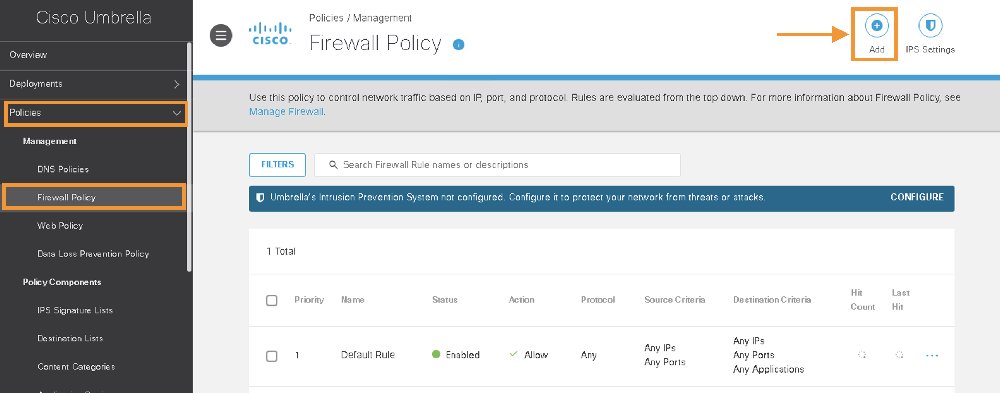
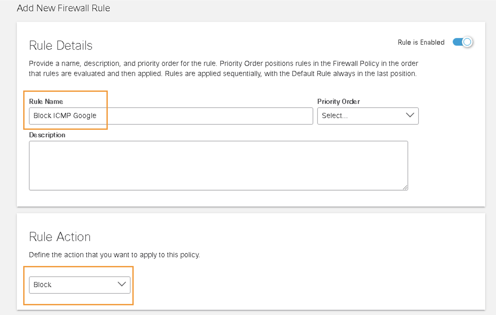
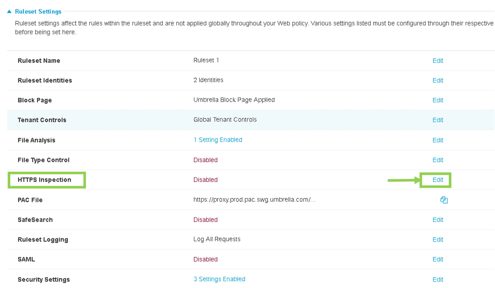

Task 6: Umbrella Policy for Site-300
Introduction:
In Task 6, we aim to create specific Umbrella Policies for Site-300. These policies will include:
- Using a Firewall Policy on Umbrella to block ICMP traffic to Google's IP address 8.8.8.8.
- Using a Web Policy on Umbrella to block web traffic to social media websites, specifically Facebook.
Step 1 - Firewall Policy
Objective: Configure a Firewall Policy on the Umbrella Dashboard to block ICMP traffic.
1. Accessing the Umbrella Dashboard:
- Log in to the Umbrella Dashboard via the
Umbrella SSObookmark in Google Chrome on the RDP session (jumphost).
2. Creating the Firewall Rule:
- Go to Policies > Management > Firewall Policy and click Add. 
- Create a Rule Name of
Block ICMP Google. - Select
Blockunder Rule Action.  - Choose
ICMPunder Rule Criteria > Protocol. - Under Destinations, select
Specify IPand enter the CIDR IP Address8.8.8.8and Click Add
- Under Logging toggle the
Logging Enabledto turn it on and then Save the policy.
Step 2 - Web Policy
Objective: Set up an Umbrella Web Policy to block access to Facebook.
1. Creating Web Policy:
-
Navigate to Policies > Management > Web Policy and click Add on the top right page:

-
Click
ADD RULEunder Ruleset Rules. -
Name the rule
Block Facebook. The default action isBlock. Then clickAdd Identity.
-
On the
IDENTITIESpage, scroll down, select the Network Tunnels and hit Apply as shown in below screenshot. This will result in selecting the two network tunnels between Umbrella cloud and SD-WAN Site-300:
-
Click
Add Destinationfor this new rule:
-
Click on Application Settings (on the right side at the right arrow
>), then Scroll down toSocial Networkingand Click on the right arrow>of the Social Networking.
-
Next, select
FacebookandFacebook Messengerand hitApply
-
On the main Rule screen, Click
Saveat the right side of the newly created Rule:
-
Click three dots (
...) and thenEnable Rule
-
Confirm by clicking
Update
-
Under Ruleset Settings, go to the
Ruleset Identitiessection and clickEdit
-
Select
TunnelsunderAll Identitiesand clickSave
-
Under Ruleset Settings, go to the
HTTPS Inspectionsection and clickEdit -
Select
Enable HTTPS Inspection, thenSave
-
Scroll down and click Close

Step 3 - Web Policy Tester
Objective: Test the newly created Web policies using Umbrella's "Policy Tester".
1. Testing Web Policy:
-
Go to Policies > Management > Web Policy and click Policy Tester at top right page.

-
On the
Web Policy Testerpage,- Under the Primary Identity search box type
Siteand then select any of the tunnels for Site300 - Under Destination, enter
facebook.com - Then click Run Test button:

- Under the Primary Identity search box type
-
Observe the test results showing the Ruleset and rule match.
-
Explore the Web Policy Tester further by testing traffic to different destination website such as
cisco.com,google.com.
Step 4 - Verify Policies
Objective: Validate the impact of both Firewall and Web Policies on SD-WAN Site-300.
1. Validating Traffic Redirection:
-
Launch console access to ubuntu
Site300-Ubuntu-VPN10host by using mRemoteNG application. -
Access
welcome.umbrella.comon this ubuntu host to confirm traffic redirection. green check mark should appear, confirming that traffic from VPN 10 is being successfully redirected to Umbrella.
2. Confirming Web Policy Enforcement:
-
Verify
Firewall policyenforcement on Umbrella by launching the Terminal application on thisSite300-Ubuntu-VPN10VM/host. As per our policy ICMP traffic to 8.8.8.8 should be blocked now.- On the
Terminalapplication executeping 8.8.8.8command. UseCtrl+Cto stop the ping after few seconds. This ping should fail (as expected). - On the
Terminalapplication executeping 1.1.1.1command. UseCtrl+Cto stop the ping. This ping should work (as expected).
- On the
-
Verify
Web Policyby using Chromium Web Browser onSite300-Ubuntu-VPN10VM/host. Just like previous step, use the console of this VM/host by using mRemoteNG application to launch Chromium Web Browser:- On Chromium to navigate to
www.cisco.com. Access to this website should work. - Use Chromium to navigate to
cnn.com. Access to this website should work. - Use Chromium to navigate onto
www.facebook.com. As per our Umbrella Web Policy, this site should be blocked and, as expected, Cisco Umbrella block page will appear.
- On Chromium to navigate to
Step 5 - Block Sites Using Destination List
Objective: Create a custom destination list to block specific sites.
1. Creating and Applying Custom Block List:
-
Navigate to Policy > Policy Component > Destination Lists and Click Add on the top right corner to add a new list.

-
Enter Name :
Custom Block List -
On Destination List Type select
Web Policyfrom the dropdown menu -
In the Destinations field, enter
cnn.comand then clickAddas shown below: -
Verify
cnn.comis added and ClickSave: -
Now Navigate to Policy > Management > Web Policy and expand on
RuleSet 1as shown below: -
Click
Add Rule -
Enter Rule name :
Custom Listand clickAdd Identity -
Enable
Inherit Ruleset Identitiesand clickApplyas shown below:
-
Click on
Add Destinationand then click on1next toDestination Lists
-
Select
Custom Block Listand then clickApply
-
Click
Saveto save this new rule
-
Click on
3 Dots(...) on this newly created rule and toggle theEnable Rulebutton
-
Click
Updateon the next message
2. Testing the Custom Block List:
- Using mRemoteNG, relaunch the console session of the Ubuntu VM
Site300-Ubuntu-VPN10 -
Use Chromium Web Browser to validate that traffic to
cnn.comis now blocked -
Repeat the steps to block
bbc.comand validate on the same host.
Conclusion:
Upon completion of Task 6, Site300 is now equipped with robust security measures, thanks to the integration of tailored Umbrella policies. The successful configuration and testing of the Firewall Policy ensure that ICMP traffic to 8.8.8.8 is effectively blocked, enhancing network security. The Web Policy implementation restricts access to social media platforms like Facebook, aligning with the organization's internet usage policies. Additionally, the creation of custom destination lists provides flexibility in managing and securing web traffic. These measures collectively enhance the overall security of Site300, making it resilient against common cyber threats and aligning with organizational security protocols.